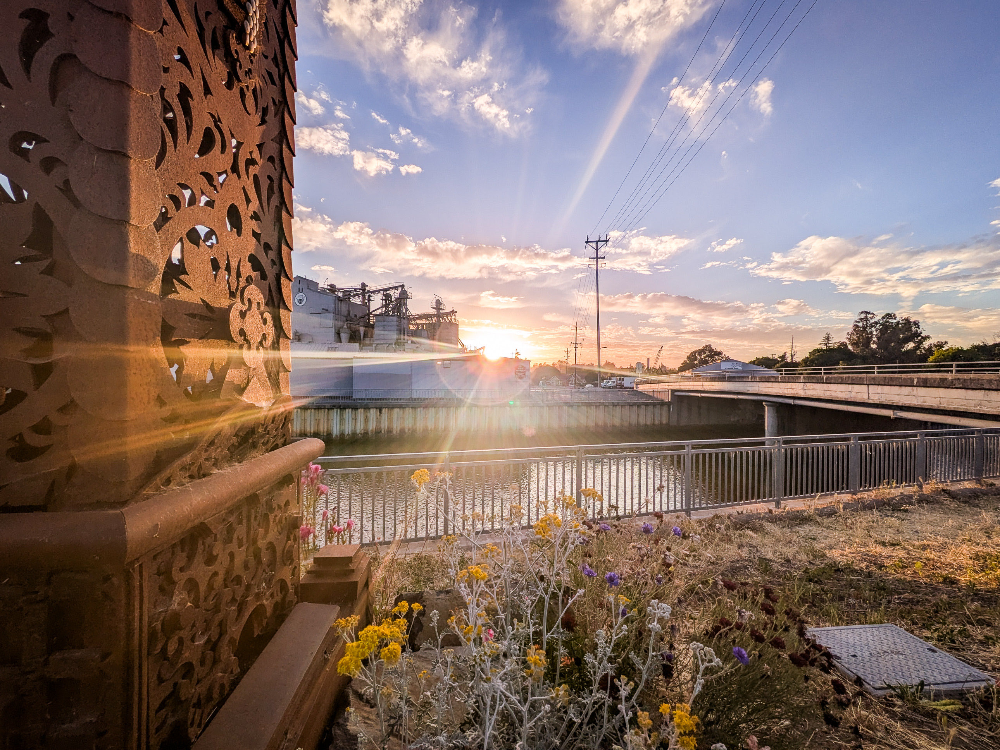

Fields, Rivers & Golden Hours
Landscapes, streets, and quiet moments from Petaluma and Sonoma County
A curated collection of photography from one of California's most charming small cities.
Explore Galleries
Landscapes, streets, and quiet moments from Petaluma and Sonoma County

I'm Robby McCullough — a marketer, photographer, and web designer based in Petaluma, California. Whether you're interested in photography, a creative project, or just want to talk about something local, I'd love to hear from you.
Get in Touch